Case Study
Night, Adios
A neon subway shooter about a society that treats rest as weakness, and the design changes I made when the original 3D version stopped being readable.
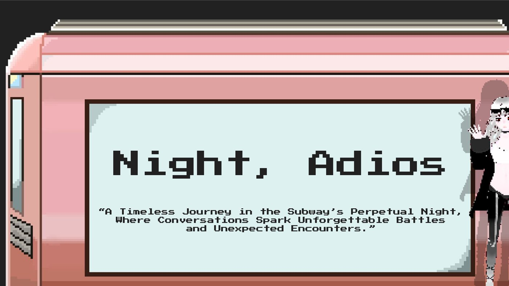
The world
The setting imagines a city where sleep has nearly disappeared and the one remaining sleep-inducing substance is banned. Different groups fight over the right to rest.
I used the New York subway as the main space because it can be crowded, multicultural, beautiful, hostile, and unequal all at once. Tile mosaics and architecture sit next to arguments, fare evasion, and pop-up performances in the same carriage. That mixture is the tone the game wants.
The interesting part of this project is not the lore. It is what I changed when the first version stopped being readable.
Iteration
3D to 2D side-scrolling. The game was originally a 3D bullet hell. Projectile readability and navigation were chaotic: players could not tell what was coming at them or where they were going. Moving to a side view gave combat information a much clearer hierarchy, and the loss in spatial freedom bought a large gain in legibility.
Open world to segmented carriages. An open subway diluted the combat. Breaking the space into individual carriages improved pacing, let me control encounters one at a time, and gave the player a sense of moving forward through the city rather than wandering it.
Health and ammunition separated. I had first designed them as a combined system. In play, that meant the two resources blurred into one and neither decision was interesting. Separating them made each resource ask the player a clearer question.
Boss and minion timing reworked. Bosses originally attacked at the same time as their assisting minions, which read as unfair rather than difficult. Restructuring the timing meant pressure the player can see coming, so the challenge comes from reading the fight instead of absorbing damage they had no way to avoid.
Supporting systems sit underneath these, including NPC relationships, faction reputation, random events, carriage maps, enemy notes, and boss recruitment. They are not what the project is about, but they are not what the project is about.
Project deck
The complete design deck, covering the premise, gameplay systems, iteration, character design, the Blueprint work, and the art pipeline.
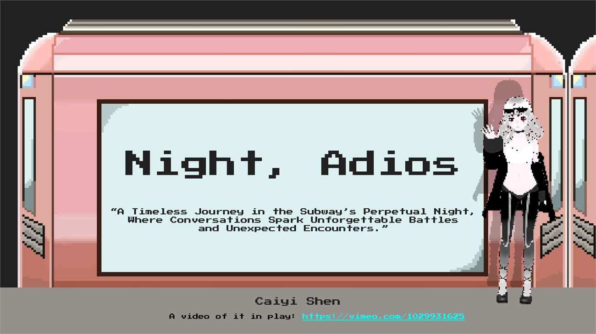
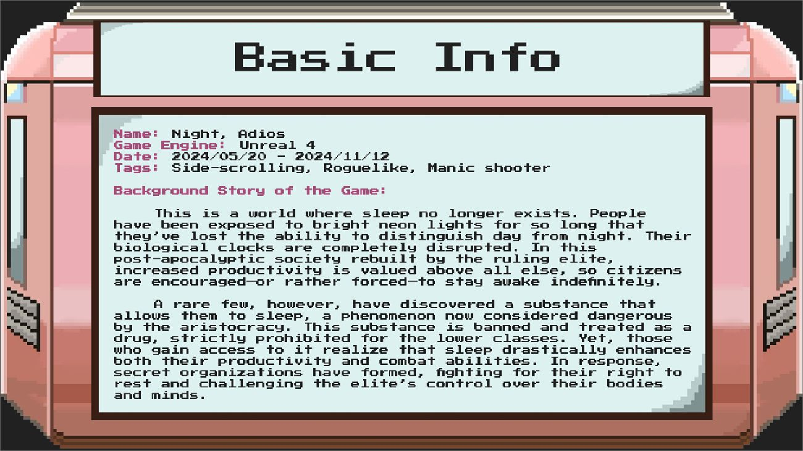
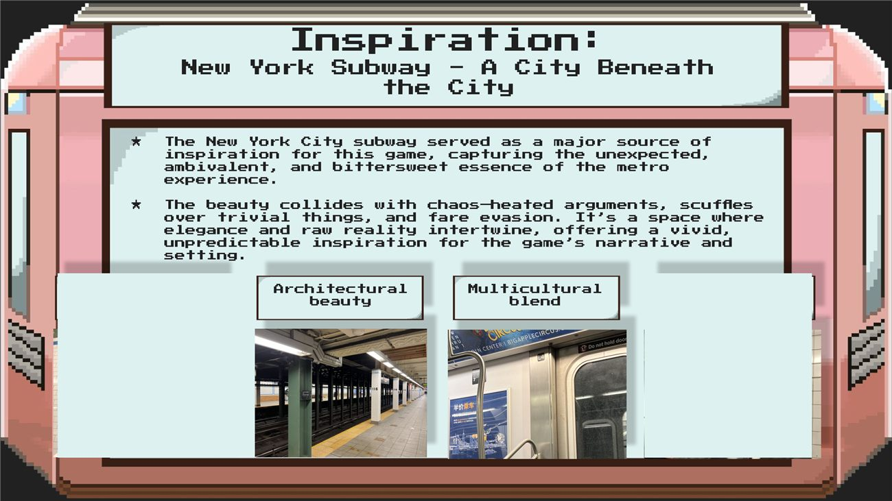
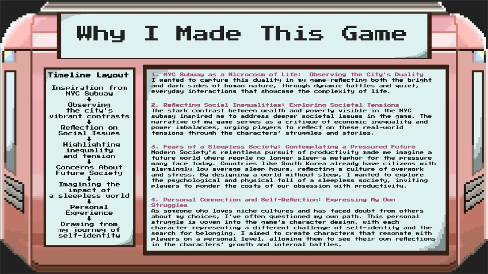
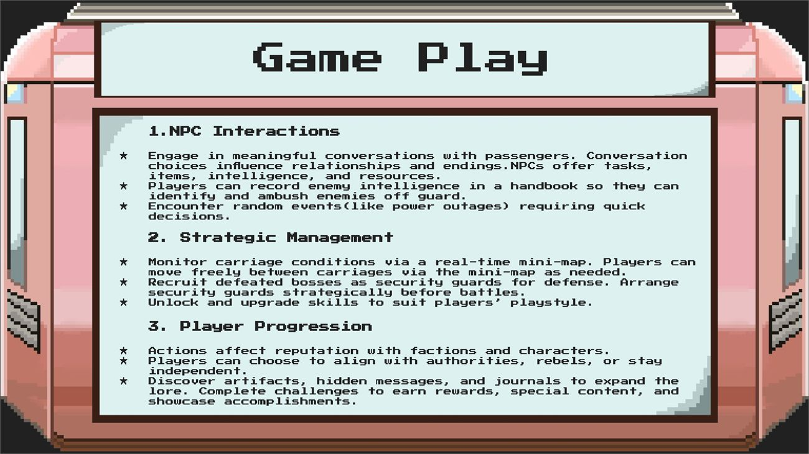
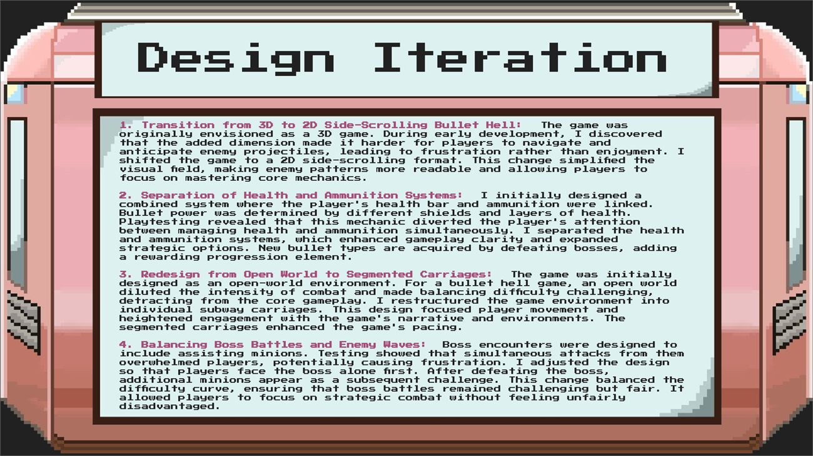
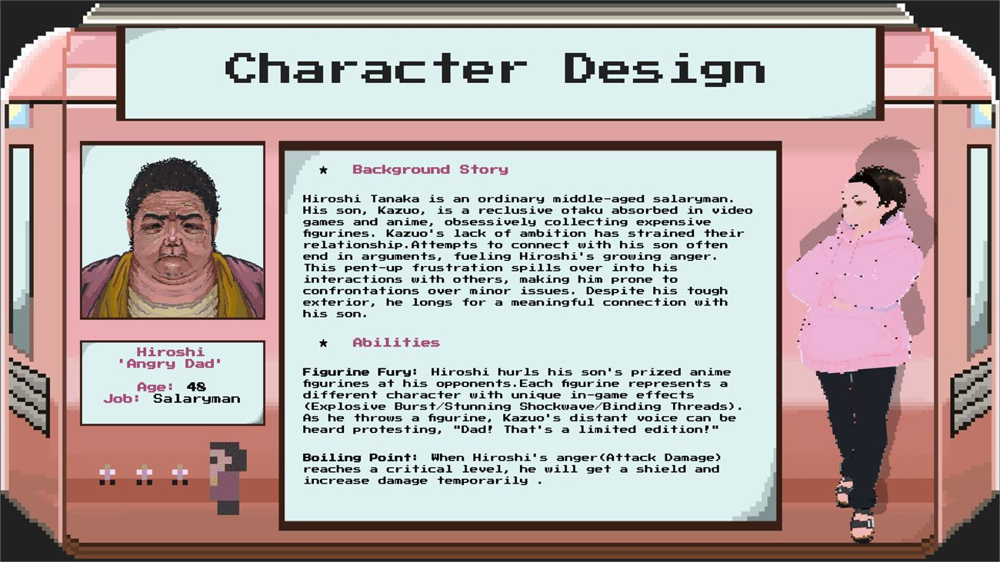
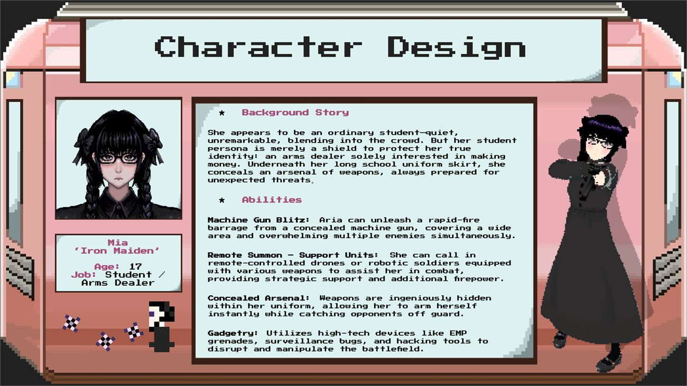
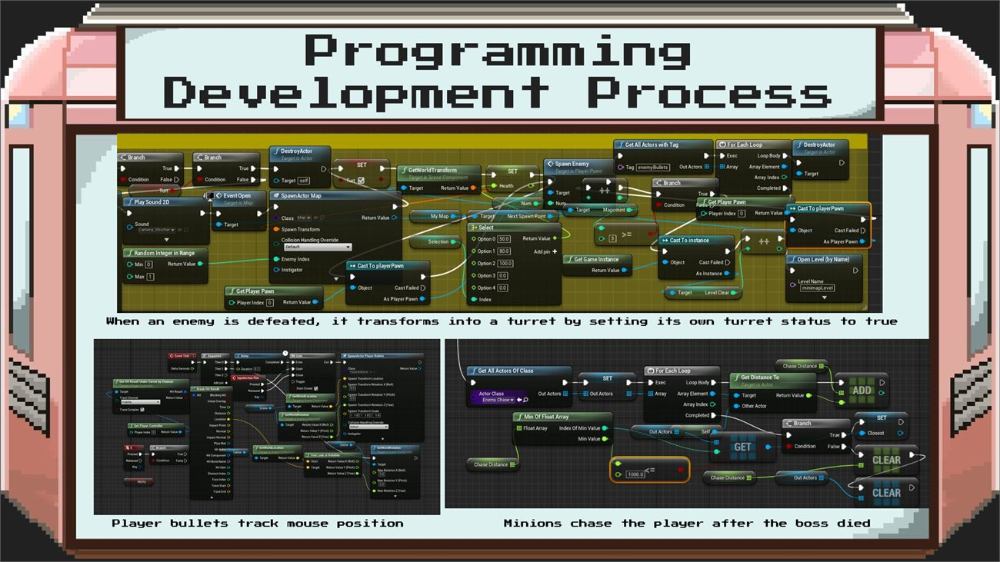
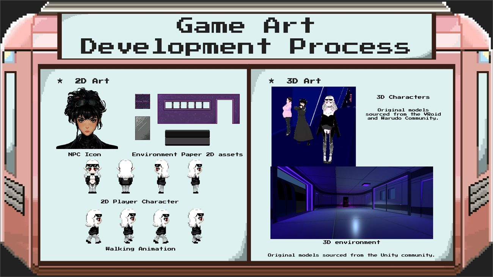
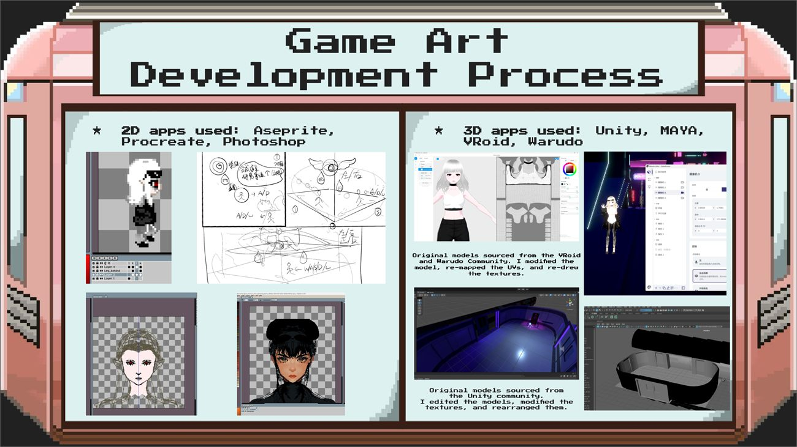
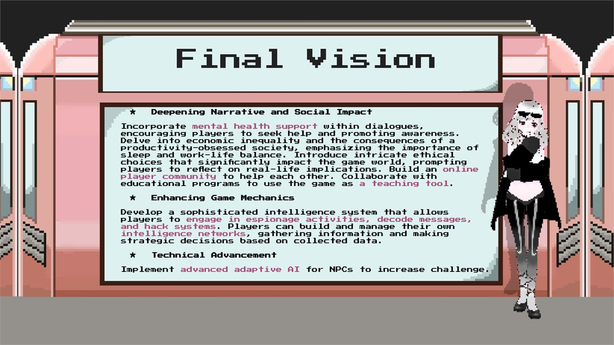
Art and implementation
I did the character design and the Unreal Blueprint implementation. Some VRoid, Warudo and Unity-community assets were modified, re-UV’d, or retextured for use in the project rather than authored from scratch, and those third-party sources are credited as such.